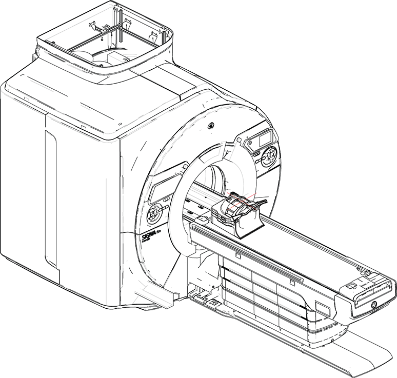
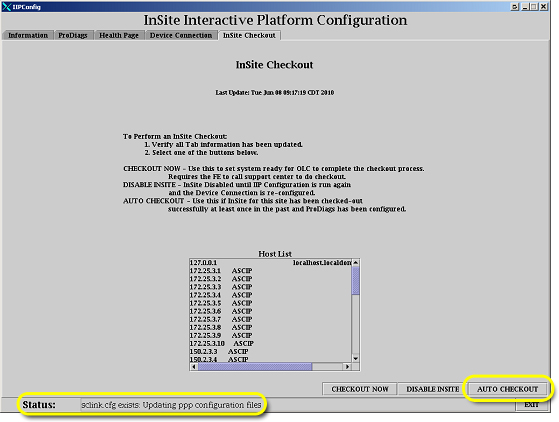
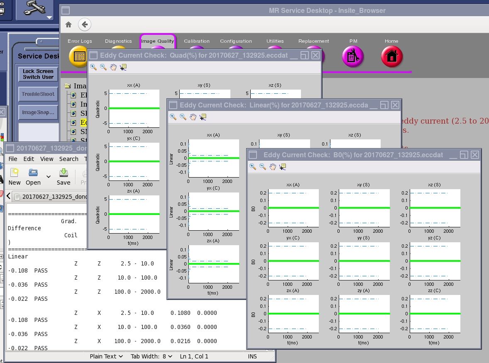
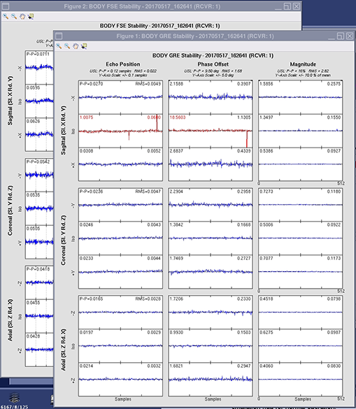
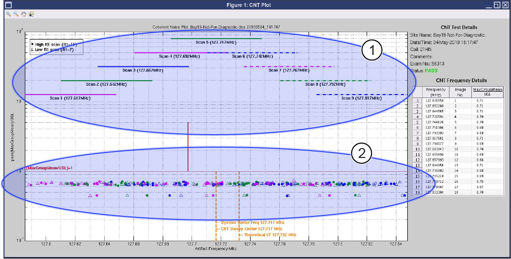

Host Tools and Diagnostics Steps
This is the standalone version of the eddy current check procedure that is part of SPT.
Prerequisites
- Coherent Noise Check Description: This tool measures the noise that could arise due to a breach in RF shield room integrity and also zipper artifact noise.
- Stability Test Description: This tool measures and shows the magnitude drift, phase offset and echo shift using Fast Spin Echo and Gradient Resolved Echo sequences for either the body coil or local coils.
- Eddy Current Check Description: This tool measures the long term eddy current (2.5 to 2000 ms) (both B0 and linear) error for all combination of coil axes and gradient axes.
- SNR Description: This tool measures the SNR level for the body coil.
Procedure
- Refer to Data Sheets for the tuning data sheet.
- From the Common Service Desktop, select Calibration. Select Probe/S Tune from the Calibration menu, and then select Click here to start this tool.
- View the complete results as follows:
- Select C Shell.
- Type more /usr/g/caldir/probes_cal.log and select Enter.
The specification criteria (absolute value) are as follows:- Single delta parameter, < 0.8
- Sum of all delta parameters, < 1.0
- Set up the TDI HNA as follows:
- Remove the service filler panel to uncover the cradle slot.
- Put the TDI HNA coil into the cradle slot and insert the connector.
- Landmark on the center line of the TDI HNA.
- Push Advance to Scan.
Figure 1. Phantom set-up inside the TDI Head Neck Unit

- If the test does not pass, resolve all errors or failures and run the test again.
- Select the settings as follows:
- Click Start.
- If the test does not pass, resolve all errors or failures and run the test again.
The test results show automatically. If you closed the test results, you can click Viewer to show them again.
Refer to Installing host system software (quick start) for more information.
note: If the system is staged with enhanced GOC, do not load software.- Undock the patient table.
- At the same time, press the cradle latch block and push in the cradle release button at the front of the cradle.
Figure 2. Cradle Removal

- While holding down the latch block and pressing the cradle release button, slide the cradle forward enough so that the cradle covers the top area of the cradle latch block. Release the latch block and cradle release button.
 caution
caution- Push in the right actuator on the table front base.
Figure 3. Table Front Base

- Prop up the cradle or remove the cradle from the patient table to perform desired maintenance.
Figure 4. Prop Up Cradle

- Connectivity
- This tool works regardless of the connectivity profile in use.note: The AUTO CHECKOUT option can only be used if a checkout was successful. If the site has completed a checkout using the CHECKOUT NOW button at some previous time, an /export/home/insite/sclink.cfg file is present. If the site has not done InSite checkout earlier, please perform the InSite checkout using the Executing InSite/IIP checkout procedure.
- On the InSite Checkout tab, click AUTO CHECKOUT to begin the verification process.
Figure 5. Auto checkout

The status bar indicates the status of the verification process. An Auto Checkout Cancel dialogue displays while the process is running.Figure 6. Auto checkout cancel box

- Allow the system to run until the box disappears.When AUTO CHECKOUT is complete, the status bar displays the message InSite Dial out check completed successfully.
- Disabling TR, DD, and RF inputs for head channel
- Make sure that the system is idle and all coils have been removed from the magnet bore.
- Open the front door of the .
- Disable the following switches on the driver module and the exciter.
- On the front of the driver module, set SW2 to TR DISABLE (down).note: Leave SW1 set to HV ENABLE (up).
- On the front of the exciter, set the RF ENB switch to the disabled (down) position.
- On the front of the driver module, set SW2 to TR DISABLE (down).
Pressing the actuator button engages the secondary cradle latch cable and causes the pin stop to move down flush with the table top surface, allowing the cradle to slide forward.
Finalization
The viewer is also available from the CSD:
- From the CSD, go to .
- Click Eddy Current Check Results Viewer to open the viewer.
- Click to open the viewer.
Figure 7. Eddy current check tool viewer

- When you click the Viewer button on the SNR Tool GUI, the viewer shows. note: Report manager is not supported for this tool. Use the Viewers to see the results in detail.
- The viewer is also available from the CSD: Go to . Click SNR Tool Results Viewer to open the viewer.
- To see the most recent result, click Most recent result.
- To see the overall SNR trend, click All results and then click Plot.
- The spec limits show in the top right corner of the viewer.
Figure 8. SNR tool viewer
- The test results and plots will show automatically after the test is completed.
- After you close the plots, they are no longer available.
Figure 9. Stability tool output plot example

From the CSD, go to . Click Coherent Noise Test Tool Results Viewer to open the viewer.
Figure 10. Coherent noise test viewer (passing results shown)

| Item | Description |
|---|---|
| 1 | Frequency bands scanned |
| 2 | Noise within spec |
- Do a TPS reset.
- If the tool aborted the scan or if the scan failed, check the error log to find the cause of the problem.